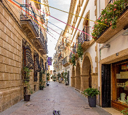
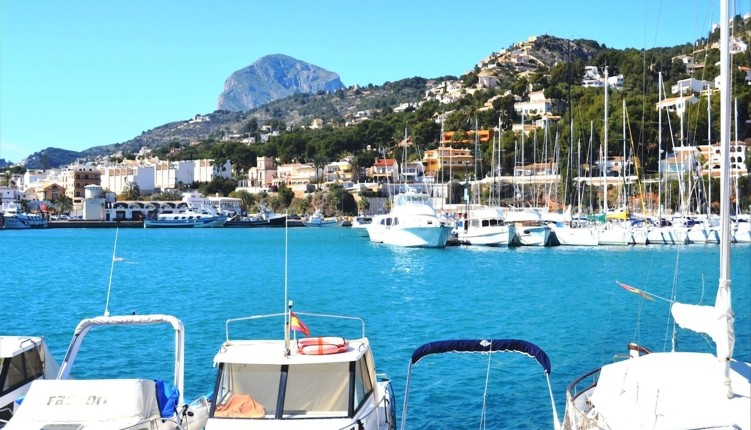
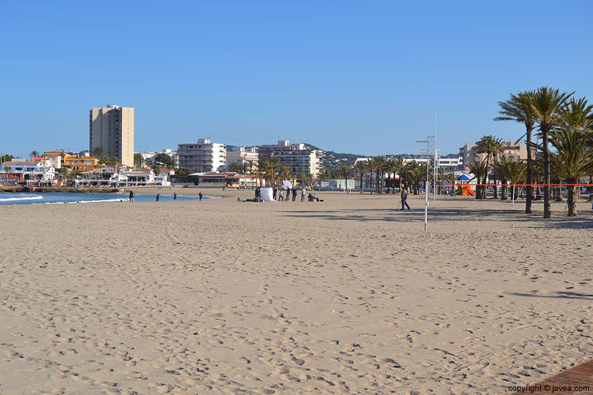
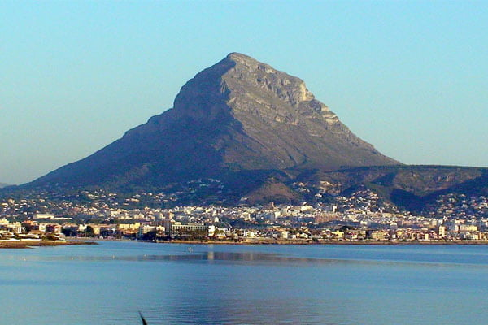
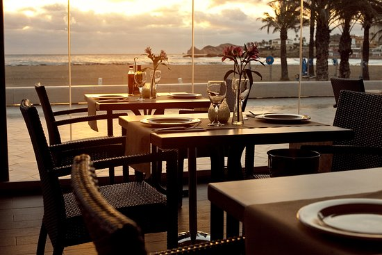
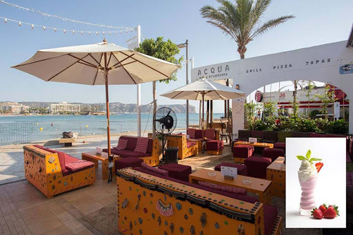
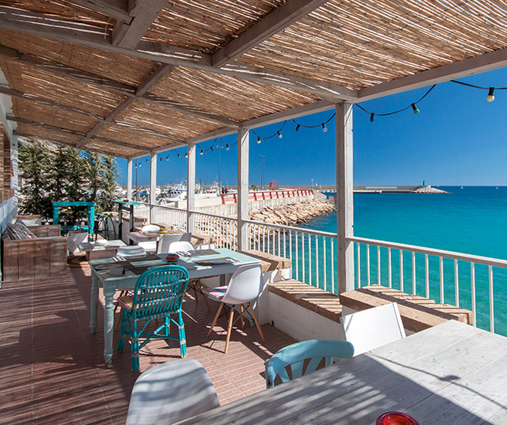

Información
Jávea es un municipio de la Comunidad Valenciana situado en la zona norte de la provincia de Alicante,entre los cabos San Antonio y el Cabo La Nao. Cuenta con 27.225 habitantes aunque en verano triplica su población.
Pueblo
El pueblo constituye el núcleo histórico, aún conserva su trazado medieval con calles estrechas y sus conocidas casas encaladas, combinando fachadas blancas con la característica “piedra tosca” de la zona.
En el centro se sitúa la Iglesia de San Bartolomé, y a ambos lados de la iglesia se hallan el Mercado municipal de Abastos y el Ayuntamiento.
También son muy conocidos el Museo Arqueológico y Etnográfico Soler Blasco, ubicado en la Casa-Palacio de Antoni Banyuls del s.XVII y la Capilla de Santa Ana.
Puerto
En la zona del puerto encontramos la Iglesia de Nuestra Señora del Loreto, la cual llama la atención al tener forma de barco.
El puerto está situado al pie de los acantilados del Cabo San Antonio, lo cual crea un paisaje incomparable.
Arenal
El Arenal es la zona de playa, única playa de arena que hay en el municipio de Javea, es la zona más turística y en ella se encuentran 4 hoteles.
La playa de interminables arenas blancas y caracterizadapor sus suaves pendientes la hacen muy apta para el baño.
Cuenta con un paseo marítimo en el que encontramos gran cantidad de bares y restaurantes. Además en esta zona también se encuentra el canal para pequeñas embarcaciones.
Montgó
El Montgó forma parte del Sistema Bético, las cordilleras béticas mueren en el mar con el Montgó y reaparecen en las Islas Baleares.
El Parque Natural es muy importante por su riqueza de fauna y flora y su combinación de ecosistemas terrestre y marino.
Ha sido un faro natural para los marineros ya que se alza en solitario frente a la costa.
Enlaces a bares y restaurantes
  Vídeo de playas y calas
Las calas de Jávea
| INFORMACIÓN DE LAS CALAS | |||
|---|---|---|---|
| NOMBRE | OCUPACIÓN | DISTANCIA DESDE ARENAL | LONGITUD |
| Cala de la Granadella | Alta | 15 minutos (8´4 km) | 160m |
| Cala Sardinera | Baja | 9 minutos (4´5 km) | 200m |
| Cala del Portixol | Media | 13 minutos (6´4 km) | 900m |
| Cala Ambolo | Baja | 14 minutos (7´5 km) | 300m |
| Cala Blanca | Media | 7 minutos (3´0 km) | 140m |